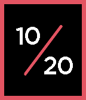

Watchfaces
Roughly halfway through high school during junior year I started to gain an interest in reverse-engineering and creating my own watchfaces for the Pebble watch ecosystem. This was my first official foray into the world of coding. To say starting out coding with C as my first language was hard would be an understatement.
I learned a ton of really valuable skills from these mini projects though! This allowed me to learn some of the more intensive intro concepts of coding on my own. This cemented my interest in coding and allowed me to work on projects I was very passionate about while learning in the process. Here's what I learned:
- The C Programming language
- My first official programming language!
- Fundamentals of programming in general
- Allowed me to grasp new concepts easily when I moved to college
- Open source software project management
- And learned a lot about open source culture in general!
- Git! (and GitHub)
- And more!
The Projects
(These are sorted chronologically, with newer projects first)
Pixel
Dots
Slash


Metro+
TicToc+


Pride Time